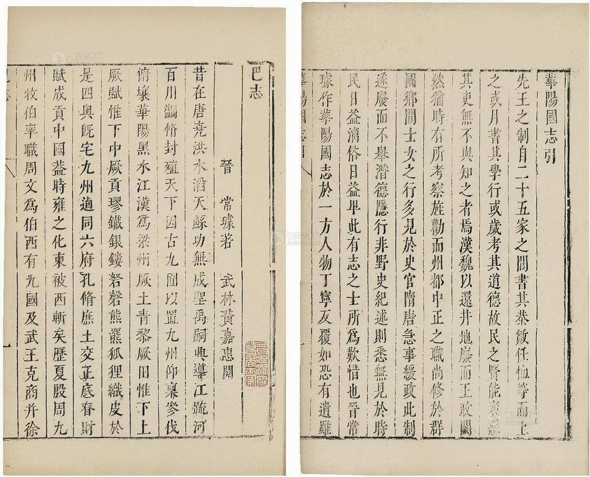

川菜的孕育与初步发展
川菜在商周时期就已有萌芽。商代以前，巴蜀地区就已经能够制作出精美的陶制食器。 秦汉魏晋南北朝时期，川菜初生形态。为了巩固秦在巴蜀的统治，秦惠王在位时就开始移民巴蜀。秦昭王时期，李冰为蜀郡守，兴修都江堰水利工程。 秦始皇统一全国后，再次大规模移民入川。这些举措都极大促进了当 地经济的发展和饮食文化的交流，为川菜的发展提供了必不可少的物质文化基础。
三国时期的川菜已经拥有了一些特色，例如鱼类的菜式。曹操在《四时食制》中，特别记有“郫县子鱼，黄鳞赤尾，出稻田，可以为酱”，黄鱼“大数百 斤，骨软可食，出江阳、犍为”。现在的川菜少有甜味，川人也不喜食甜， 但那时候人们还会在肉里加蜜糖增味。魏文帝曹丕的《与朝臣诏》中的记载也证实这一点“新城孟太守道，蜀睹豚鸡鹜味皆淡，故蜀人作食，喜着怡蜜”。
唐朝时期
大唐盛世，国泰民安，社会稳定，经济繁荣，文化鼎盛，川菜在宫廷已经小有名气。而川菜文化也走出了四川盆地，开起了大大小小的川菜 馆。川菜很快在许多城市流行起来，文人墨客们成了它忠实的粉丝。 诗仙李白在四川生活的20余年里，爱极了江油的名菜焖蒸鸭子，这道菜既保持了鸭子的鲜美，又兼有酒香，让人唇齿留香念念不忘。所以入京供奉翰林 后，秉持着“不会做饭的剑客不是好诗人”的原则，李太白先生亲手创新 了这道菜，在原有的基础上加入花雕酒、枸杞、三七等滋补药材，献给唐玄宗。皇帝一吃，顿感惊艳，大为赞赏，一高兴就给这道菜赐了名，叫做“太白 鸭”。两宋时期，川菜已经形成了一个独立的菜系，“川食店”遍及开封 和临安的大街小巷。川菜馆的出现一枝独秀，打破了南北二分都市饮食结构，形成了南食、北食和川饭店三分的新局面。《东京梦华录》中记载：“更有 川饭店，则有插肉面、大燠面、大小抹肉淘、煎燠肉、杂煎事件、生熟烧饭”

宋明清时期
两宋时期，川菜已经形成了一个独立的菜系，“川食店”遍及开封和临安的大街小巷。川菜馆的出现一枝独秀，打破了南北二分都市饮食结构 ， 形成了南食、北食和川饭店三分的新局面。《东京梦华录》中记载：“更有川饭店，则有插肉面、大燠面、大小抹肉淘、煎燠肉、杂煎事件、生熟烧饭” 明末的农民战争中，张献忠发现自己的皇帝梦无法实现后，便在四川实行了焦土政策，把原本生机勃勃的成都平原屠杀成了一片荒野。而古老的川菜文化， 也随着这场灾难被销毁得所剩无几。《四川通志》记载：“蜀自汉唐以来，生齿颇繁，烟火相望。及明末兵燹之后，丁口稀若晨星。” 清政府在统一后，便开展了著名的“湖广填四川”运动，鼓励外省移民入川垦荒。此后，饮食文化交流融合，川菜逐渐复苏，逐渐形成了“一菜一格、百菜百味”的 新局面。但古川菜已随着“百不余一”的古川人成为了难以追寻的历史碎片
